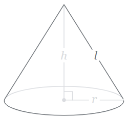

01 Example: Review Python
Purpose
Prove that you can write a simple Python program that gets input from a user, performs arithmetic, and displays output for the user to see.
Problem Statement

A right circular cone with radius r and height
h.
The surface area of a right circular cone can be computed with this formula:
A = π r
r + r2 + h2
- A is the surface area of the cone
- r is the radius of the cone
- h is the height of the cone
Assignment
Write a Python program named cone_surface_area.py
that reads from the keyboard the radius and height of a right
circular cone and computes and outputs the surface area of that
cone.
Helpful Documentation
The Python
math
module contains mathematical constants and functions including
math.pi
and
math.sqrt.
Sample Run
> python cone_surface_area.py This program computes and outputs the surface area of a right circular cone. Enter the radius of a cone: 5 Enter the height of a cone: 8 The surface area is 226.7
Testing Procedure
Verify that your program works correctly by following each step in this testing procedure:
- Run your program using the input shown in the sample run section above. Ensure that your program's output matches the sample run output.
- Run your program again and enter the values: -5 and 8. Did your program output valid results? What should your program do when a user enters negative numbers?